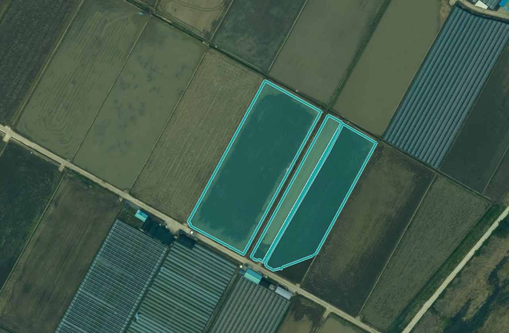
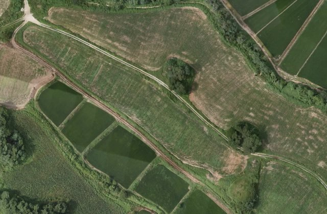
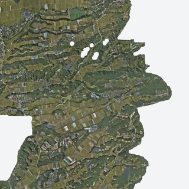

기관›남원시
남원GV
남원시 가벼운 칸켜짐
전북특별자치도 남원시 · 남원시 GeoVision 플랫폼namwon.land-xi.dev기관 관리자 담당자공간 생김 2026.10.01
기관 정보 — 마크 · 이름 · 색기관 메인 열기
개요받는 서비스와 담당4촬영 요청 담당공유 영상10 / 11배경 사진사용 현황계정2
3개받는 서비스운영 1 · 첫 결과 전 2 · 2027년 1
2명계정기관 관리자 1 · 부서 사용자 1
0건이번 달 보낸 요청분석 0 · 촬영 0
2.3GB저장XI ChatGEO 요청 94건 · 이번 달
최근 기록이 기관에서 일어난 일
- 10.01담당자 — 영농관리 행정서비스 요약 내려받기(2판)
- 10.01부서 사용자가 볼 서비스 지정 — 영농관리 행정서비스
- 10.01도로 안전관리 서비스 결과 설명서 1판 — 첫 결과 전
- 10.01기관 공간 생김 — 가벼운 칸
- 09.26영농관리 행정서비스 결과 설명서 2판 — 2025년 드론영상 · 2,098필지
받는 서비스와 담당서비스마다 LX 헬프데스크 담당 — 비면 관리자가 받음
| 서비스 | 상태 · 최근 결과 | 결과 설명서 | LX 헬프데스크 담당 | ||
|---|---|---|---|---|---|
 | 영농관리 행정서비스2025년 사업 · 농정과 · 프로젝트장 김도윤예시 | 운영2025년 드론영상 · 2026.06.08 · 판정한 필지 2,098 | 2판2026.09.26 | 김김도윤예시 | 바꾸기 |
| 첫 결과 전 | 생활환경 위험요소 탐지 서비스2023년 사업 · 환경과예시 | 첫 결과 전영상이 들어오면 분석 | 1판2026.09.26 | 미지정 — 관리자가 받음 | 고르기 |
| 첫 결과 전 | 도로 안전관리 서비스2026년 사업 · 건설과예시 | 첫 결과 전영상이 들어오면 분석 | 1판2026.10.01 | 이이수진예시 | 바꾸기 |
| 2027년 | 인파관리 서비스2027년 사업 · 관광과예시 | 내년아직 열지 않음 | — | 아직 열지 않음 |
담당이 비면 못 읽는 파일 · 검토 요청 · 분석 요청이 LX 관리자에게 옵니다. 바꾸면 기록이 남고, 기관 화면에는 그 서비스의 LX 담당 이름만 보입니다.
촬영 요청 담당이 기관이 보내는 새 촬영 요청 — 시기 · 금액 답
촬영 요청은 누가 받나관리자가 직접 답하거나, 직원 한 사람을 지정합니다. 비어 있으면 관리자 직접.
관리자 직접직원 지정이이수진예시공유 영상켠 LX 영상만 이 기관이 지도에서 보고 분석 요청에 불러옵니다 · 10 / 11
 2025-04 드론 · 남원 AOI2025년 · 드론 · 지도
2025-04 드론 · 남원 AOI2025년 · 드론 · 지도 2025-06 드론 · 남원 AOI2025년 · 드론 · 지도
2025-06 드론 · 남원 AOI2025년 · 드론 · 지도
2025-08 드론 · 남원 AOI2025년 · 드론 · 지도 2025-10 드론 · 남원 AOI2025년 · 드론 · 지도
2025-10 드론 · 남원 AOI2025년 · 드론 · 지도
2025-10 위성 · 남원 시가지2025년 · 위성 · 지도- 위성2025-04 위성 · 남원 시가지2025년 · 위성 · 지도
- 변화 지수변화 지수 2025-04→10 · 국산리2025년 · 드론 · 지도
- 항공2023 항공 · 남원2023년 · 항공 · 지도 · 분석 요청
- 항공남원시 2020 항공영상2020년 · 항공 · 지도 · 분석 요청
- 항공AI Hub 125 원천 칩 2020(도엽 35710074)2020년 · 항공 · 지도
- 항공남원시 2023 항공영상원본 지울 날짜 2026.12.30 · 공유 꺼짐
기관 메인 배경 사진로그인 전 화면 · 이 기관 영상 · 결과 장면에서 고르거나 올림
영농관리 결과 · 2025
2025.10 남원 시가지
2025.04 드론2025.08 드론
 비닐하우스 결과 · 2025
비닐하우스 결과 · 2025사진 올리기이 기관 영상 · 결과 밖의 사진
드론·항공 영상을 AI로 분석해
남원시 행정 업무를 돕습니다
고른 장면은 메인 바탕에 흰빛을 눌러 깔립니다. 작은 크기로만 저장하고 원본은 내주지 않습니다.
사용 현황이번 달 · 얼마나 쓰고 있나(막는 한도 없음)
2.3GB저장
결과 2.0대장 0.27올린 영상 0.003
0hGPU 시간
분석 · 학습 포함
0㎢분석 면적
분석 요청으로 돌린 넓이
94건XI ChatGEO 요청
채팅으로 지도 제어 · 분석 · 보고서
서버 저장 공간은 인프라 화면의 하드웨어 설정에서 나눕니다. 여기서는 쓰는 양만 봅니다.
계정기관 관리자 1 · 부서 사용자 1 · 사용 중지 2(옛 아이디)
| 이름 | 부서 | 역할 | 볼 수 있는 서비스 | 마지막 로그인 | 상태 | |
|---|---|---|---|---|---|---|
| 담당자lxadmin@lx.or.kr | — | 기관 관리자 | 모든 서비스 | 10.01 18:23 | 사용 중 | 잠금 · 임시 비밀번호 |
| 확인용 담당자check-impl5@namwon.go.kr | 농정과 | 부서 사용자 | 영농관리 행정서비스 | 10.01 18:08 | 사용 중 | 잠금 · 임시 비밀번호 |
사용 중지 2 보기
가입 승인은 기관 관리자가 합니다. LX 관리자는 보기 · 잠금 · 임시 비밀번호 · 지원만.
LX 관리자 대시보드기관 › 남원시숫자 · 영상 목록 · 계정 · 기록은 서버 값 · 사람 이름은 예시